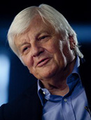

马克·哈里斯，美国导演，其作品《红木林》、《陌生人的怀抱》分别在1967年、2001年获得奥斯卡最佳纪录短片奖和奥斯卡最佳纪录长片奖。
详细...
纪录片导演高峰，制作过大量系列片和单本纪录片，这些创作获得较多的国际国内等重大奖项，对中央电视台的纪录片创作及科教频道的创立具有突出的贡献。
详细...
《经典人文地理》创办人、云南电视艺术家协会副主席、中国影视人类学协会常务理事。代表作《最后的马帮》、《山洞里的村庄》、《消失的古滇王国》。
详细...

雅克·贝汉先后担任了《生命之外》、《喜马拉雅》等影片的制片。由他导演、编剧、制片的《迁徙的鸟》宣告了一位纪录片大师的诞生。
详细...